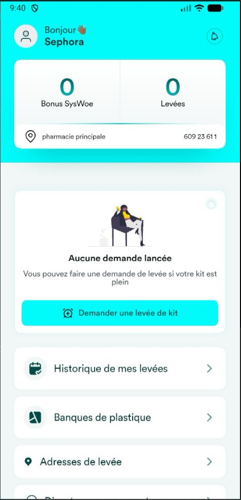

SCoPE connecte les ménages, entreprises et institutions à des solutions de collecte et de recyclage des déchets plastiques à Lomé.
Adoptez les bons gestes au quotidien
Nous venons récupérer vos kits
Vos déchets deviennent de nouvelles ressources

tonnes de déchets produits chaque année à Lomé
tonnes seulement sont collectées et acheminées au centre de traitement
Insalubrité, maladies et risques d'inondations accrus
de tri, de sensibilisation et de systèmes de collecte efficaces
Souscrivez à l'offre SCoPE sur notre application ou lors de nos tournées.
Nous vous remettons un kit fabriqué à partir de plastique recyclé.
Remplissez votre kit avec vos déchets plastiques propres et secs.
Quand votre kit est plein, bipez-nous. Nous sommes alertés en temps réel.
Nous collectons, trions, nettoyons et vendons aux centres de recyclage.
Triez vos déchets plastiques directement chez vous.
Mettez en place une meilleure gestion de vos déchets.
Sensibilisez les étudiants et créez de bonnes habitudes.
Accédez à une ressource plastique mieux triée et valorisée.